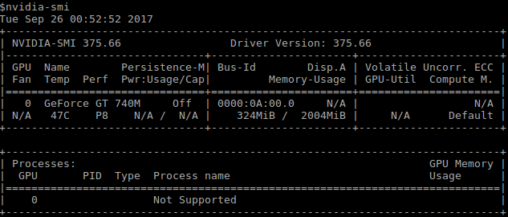
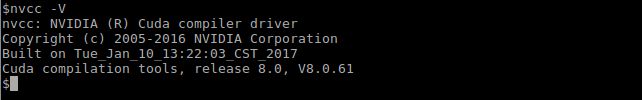
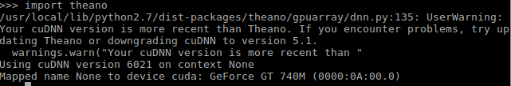

Theano is a Python library for machine learning developed
in University of Montreal. It provides optimized tools for various machine learning
and deep learning tasks. It can achieve outstanding performace when used
with gpu. Theano uses CUDA for accelerating computations on Nvidia Gpus.
In this blog we will install Theano in Ubuntu 16.04 (64-bit)
with libgpuarray backend for CUDA acceleration.
More details on Theano and it's documentaion can be found
here.
Best way I have found is to install Nvidia Graphics Driver from System Settings << Software & Updates << Additional Drivers in Ubuntu 16.04.
To verify driver installation run following command in terminal
$ nvidia-smi
Similar output should be produced depending upon graphic card's configurations.
Currently CUDA-8.0 is the public offering by Nvidia which is supported by Theano. We can download latest CUDA from Nvidia. Cuda is available as *.deb package. After downloading the package, go to folder in which it is downloaded and run following commands to install
$ sudo dpkg -i cuda-*.deb $ sudo apt update $ sudo apt install cuda
Once installation process is finished, we need to add PATH for CUDA in ~/.bashrc file (require admin privileges). Add following lines in ~/.bashrc file
export CUDA_HOME=/usr/local/cuda-8.0
export LD_LIBRARY_PATH=${CUDA_HOME}/lib64
export LD_LIBRARY_PATH=/usr/local/cuda-8.0/lib64/
PATH=${CUDA_HOME}/bin:${PATH}
export PATH
At this point restarting the pc/laptop can be a good option. We can check if CUDA is installed correctly by running following command
$ nvcc -v
We should get similar output
Currently Theano supports CuDNN 5.1 but CuDNN 6.0 also works fine and it will also be supported in future releases. To download CuDNN, one has to register into Nvida Developer Program. After registering one will be able to download CuDNN library (libcudnn6_*.deb). To install it, go to folder it is downloaded and run following command
$ sudo dpkg -i libcudnn6_*.deb
Theano depends upon several python packages and OpenBLAS library.
All dependencies are listed here.
Install them by running following commands
$ sudo apt install openblas-dev
$ sudo apt install python-dev
$ sudo apt install cmake
$ sudo pip install numpy
$ sudo pip install scipy
$ sudo pip install nose
$ sudp pip install sphinx
$ sudo pip install pygments
$ sudo pip install pydot-ng
$ sudo pip install pycuda
$ sudo pip install scikit-cuda
To install libgpuarray run following commands
$ git clone https://github.com/Theano/libgpuarray.git
If git is not installed, run following command
$ sudo apt install git
Now, lets move ahead with libgpuarray installation
$ cd libgpuarray
$ git checkout tags/v0.6.2 -b v0.6.2
$ mkdir Build
$ cd Build
$ cmake .. -DCMAKE_INSTALL_PREFIX=~/.local -DCMAKE_BUILD_TYPE=Release
$ make
$ sudo make install
$ cd ..
Now add following lines in our beloved ~/.bashrc file
export CPATH=$CPATH:~/.local/include
export LIBRARY_PATH=$LIBRARY_PATH:~/.local/lib
export LD_LIBRARY_PATH=$LD_LIBRARY_PATH:~/.local/lib
Restart the terminal, go to libgpuarray folder and run following commands
$ python setup.py build
$ python setup.py install --user
Install Theano by running following command
$ sudo pip install theano
To configure Theano a configuration file .theanorc is made in home directory. Add following line in ~/.theanorc file
[global]
device = cuda
floatX = float32
[blas]
ldflags = -L/usr/local/lib -lopenblas
[nvcc]
fastmath = True
Open a Python interpreter and run following command
>>>import theano
Our output should look something like this
We can see in output that Theano recognizes our Nvidia Graphics Card and shows warning for using CuDNN 6.1
Contact Me
Mail @: sachin.umrao.1512@gmail.com